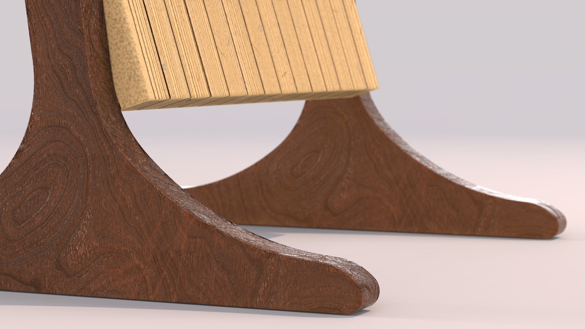
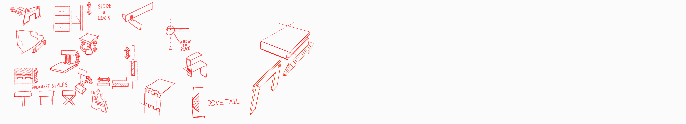
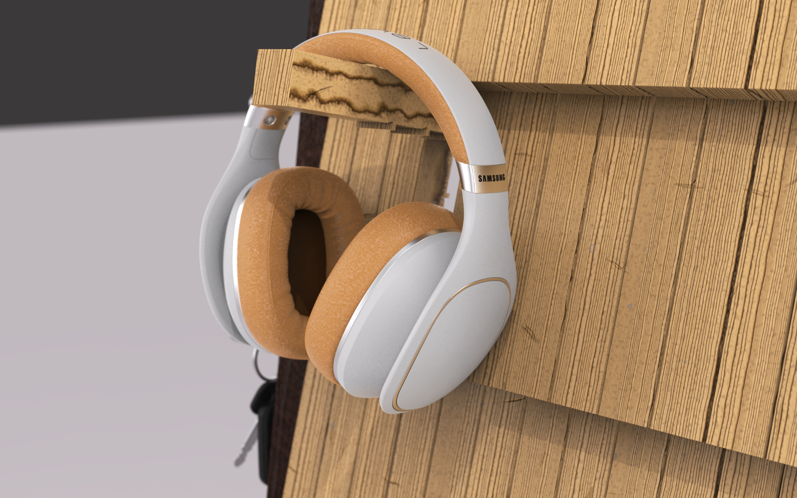
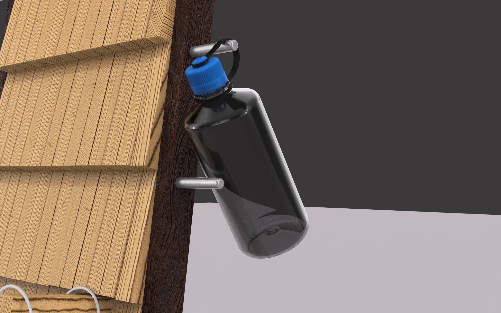
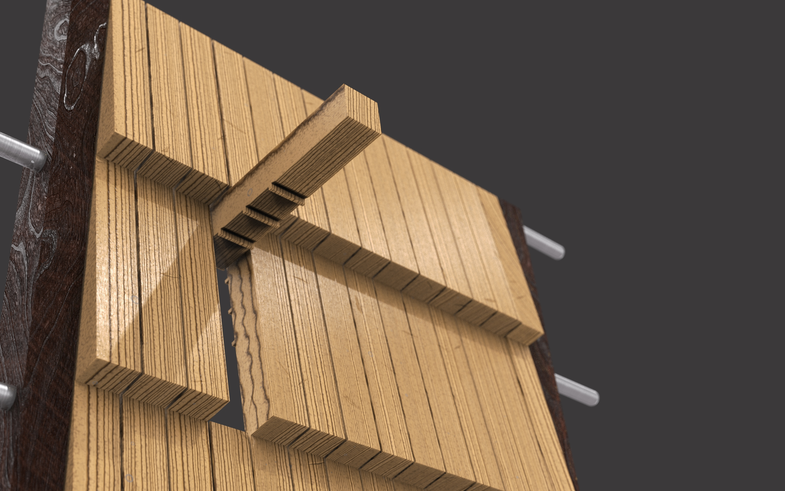
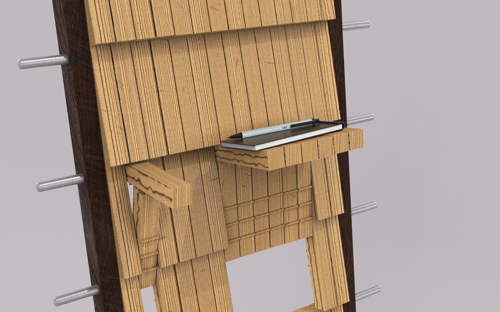

LANDING ZONE
Built around a simple insight — coming home isn't a moment for organization. It's a moment of release.
The First 5 Seconds
We all have a spot by the door. A chair, a countertop, a table edge — where keys land, bags drop, and coats pile up. The moment you walk through the door after a long day, organization is the last thing on your mind. You decompress first. The pile comes later.
The research framing that shaped this project: coming home isn't a moment for organization — it's a moment of release. Items accumulate in transitional spaces because nothing was ever designed for that exact behavior. Existing entry products assume a user who wants to organize. The actual user just wants to put things down.
Drop
Keys, bags, and daily items are set down immediately — without intention, without a destination in mind.
Decompress
After a long day, users prioritize relief over organization. The coat comes off first. Tidying comes later — if at all.
Pile
Items accumulate in transitional spaces — tables, chairs, counters — because there's no intentional home for them near the door.
Stop designing against human behavior. Design with it.
Design Brief
The behavioral patterns pointed to a clear problem: existing entry organizers assume a user who wants to organize. But the actual behavior — drop, decompress, pile — is the opposite of that. Every product on the market fights the user's instinct. The brief became: stop fighting it.
The solution had to feel like furniture, not storage. It had to handle the full range of what people carry — bulky sports gear and small daily items alike. It had to be configurable without tools. And it couldn't require wall mounting — the entry is already a complicated space to commit to.
Drop points at all heights
Accommodates the full range of what people carry — from a basketball to a set of keys.
Residential aesthetic
Reads as furniture, not utility storage. Something that belongs in a home.
Freestanding
No wall mounting, no commitment, no hardware — entry spaces are hard to commit to.
Tool-free configurable
Reconfigure as your life changes — no tools, no instructions, no friction.
Variable load capacity
Every existing entry product handles one load type well. This one handles all of them — heavy gear at the bottom, small daily items at the top.
Competitive audit of coat racks, hall trees, wall-mount slatted systems, and console tables: no existing product passed all 5 criteria.
Form Exploration
The lean-against-the-wall geometry came from watching how things actually get placed near a door. People don't walk to a dedicated storage zone — they drop things within arm's reach of the entrance. A tall, wall-adjacent form meets them there without demanding that they go anywhere.
The slatted panel system came from the configurability requirement. Vertical slats + horizontal rods that slide along the outer frame = every intersection is a potential hang point. The math worked out to 112 distinct positions — every one of them usable without tools.

Iteration — testing visual weight, load feel, and prop scale with headphones and bag

Refined angle — validating lean geometry and horizontal rod spacing

Foot detail — the freestanding base in walnut, no wall mounting required

Component and joinery exploration — early ideation working through how the slatted panel, rods, and hooks connect
Prototype Validation
An FDM scale prototype tested the lean geometry, rod UX, and shelf proportions before committing to final CAD. The adjustable rod mechanism was the most critical detail to validate — it had to feel solid and intentional without any tools.

Adjustable shelf mechanism — render vs. physical prototype comparison




Physical prototype detail photography — headphone hook, rod lock, slot geometry, and shelf rest
The System
The Landing Zone is a tall, lean, wall-adjacent slatted wood shelving system designed for the entry. Warm wood panels read as furniture — the kind of thing that belongs in a home, not a storage aisle. Horizontal rods slide along the outer frame and lock into position without tools. Hook anywhere across the slatted surface. Rest a shelf at any height. Reconfigure as your life changes.
112 Points of Customization
Every slot in the slatted surface is a potential hook, ledge, or rest. Lower positions handle bulky load — sports gear, bags, a basketball. Upper positions are for the daily items that need to be grabbed on the way out the door: keys, headphones, a wallet. The system adapts to however you actually use your entry, instead of prescribing one way to use it.
- Slatted wood panels — warm, residential aesthetic that reads as furniture, not utility storage
- Adjustable horizontal rods — slide along the outer frame; reconfigure without tools
- Variable load capacity — lower shelves handle bulky sports gear; upper positions handle small daily items
- Freestanding lean design — no wall mounting, no commitment, no hardware in the wall
Once I stopped trying to force organization and started designing for the actual moment of arrival, the form resolved quickly.